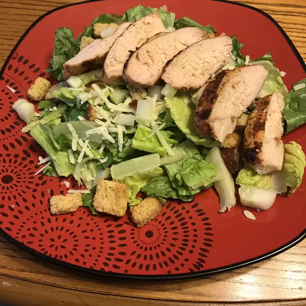

Spicy Chicken Breasts

Description
This spicy chicken recipe makes a great skinless chicken breast that can be served over salad greens or as an entrée. If serving over salad greens, cut chicken into strips and top with your favorite salsa or dressing. Use remaining spice mix for seasoning fish, meats, or vegetables.
Ingredients
- 2 1/2 tablespoons paprika
- 2 tablespoons garlic powder
- 1 tablespoon salt
- 1 tablespoon dried thyme
- 1 tablespoon ground cayenne pepper
- 1 tablespoon ground black pepper
- 4 skinless, boneless chicken breast halves
Steps
- Preheat the grill for medium-high heat. Lightly oil the grill grate.
- Mix together paprika, garlic powder, salt, onion powder, thyme, cayenne pepper, and ground black pepper in a bowl. Set aside 3 tablespoons spice mixture; store remainder in an airtight container for later use.
- Rub reserved 3 tablespoons spice mixture all over chicken breasts.
- Cook chicken on the preheated grill until juices run clear, 6 to 8 minutes on each side. An instant-read thermometer inserted into the center should read at least 165 degrees F (74 degrees C).